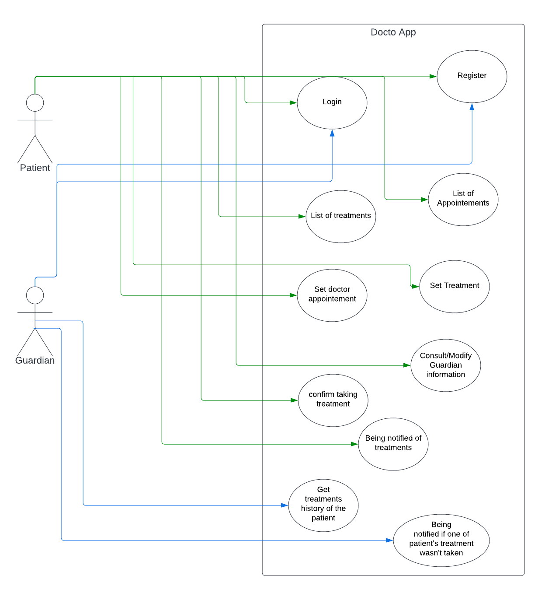

<!DOCTYPE html>
<html lang="en"></html>
<html>
<head>
    <link rel="stylesheet" type="text/css" href="style_DoctoApp.css">
	<meta charset="utf-8">
    <title>DoctoApp</title>
</head>

<body>
    <div class="header">
        <nav id="navbar">
            
            <ul id="menu">
                <li><a href="index.html">Home</a></li>
                <li ><a href="Diagrams.html">Diagrams</a></li>
                <li><a href="Screenshots.html">App screenshots</a></li>
            </ul>
        </nav>
    </div>

    <div id="fourth_block">
        <h1>Diagrams</h1>
        <h2>Use case diagram</h2>
        
        <p>This is our use case diagram, you can see 2 primary actors : patient & Guardian
            With Doctoapp, Patient can Login, Register, manage a list of treatments or appointements, and get notification to remind him to take his treatments.
            He can also choose a guardian who will be informed if the patient doesn't take his medicines in time.
            The patient can also add appointments or treatments in the app.
            A Guardian can Login, Register, being notified if the patient didn't take its treatment & get the full history of his patient treatment at any time.
        </p>

        <h2>Activity diagram</h2>
        
        <p>This is the Activity diagram, we can see the actions proccesed by each class.
            The user app do the login/register, show and process the menu and displays the notifications.
            The treatment part manage all backend stuff, checking, adding or updating in database.
        </p>

        <h2>CRC cards</h2>
        
        <p>This is the CRC diagram. We can see all the classes we need and all dependecies.
            We can see that the center of our programm is the GUI class. It's normal, it's our menu.
        </p>

        <h2>Sequence diagram</h2>
        
        <p>This is our sequence diagram, we can see that the Backend server and the BD are a lot used.
            Basicly, the app ask for some data and the server sent the data back.
        </p>

        <h2>UML class diagram</h2>
        
        <p>Here is ou UML Class diagram. We can clearly see the dependencies between classes.
            As we said GUI, the menu is the center, we can also see how the Form are part of the severals windows and how windows are parts of the menu.
        </p>

        <h2>State machine diagram(s)</h2>
        
        <p>Here the State machine diagram, we can see how pages interact. On each transition, there are our functions and conditions.
            We can se the path the user can take throught the site.
        </p>

        <h2>First use case scenario</h2>
        
        <p>In this use case scenario, we show the steps for the register case.
        </p>

        <h2>Second use case scenario</h2>
        
        <p>In this use case scenario, we present the steps when a user wants to access to his treatment. He can both create or see his appointments.
        </p>


        <h2>Package diagram(s)</h2>
        
        <p>Here is the package diagram, we can see dependencies between classes. We can see the notification class is import in a lot of classes of PatientApp.
        </p>

        <h2>Object diagram of the use case being alerted by a notification when you have to take medicine</h2>
        
        <p>This diagram shows the values of the 3 classes implicated in the treatment notification process.
            First, you have to be logged in to your account. Then being in the menu and at the time of one of your treatments
            Then click on the pop up and finally interact with the notification page. Here the user confirmed that he took his medication as 
            treatment_taken = true.
        </p>


    </div>
    <script type="text/javascript" src="script.js"></script>
</body>
</html>
